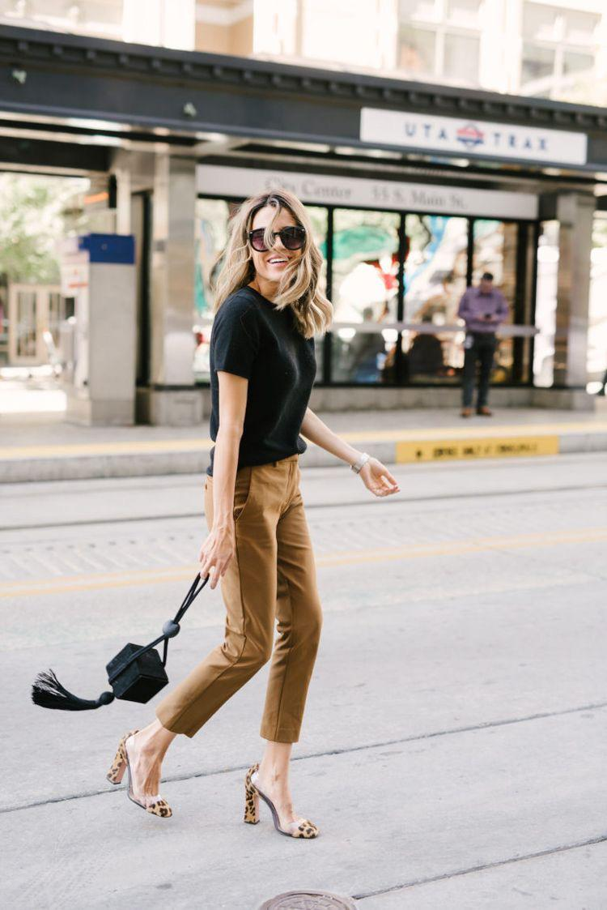

Vestido Negro Corto
Camisa Blanca

Blazer Negro
Pantalón de Vestir Negro
Falda Negra
Abrigo Trench
Chaqueta de Jeans y de Cuero Negra
Cardigan
Jeans
Polera Blanca y Negra

Aquí te presentaré las prendas básicas que no pueden faltar en tu closet, porque son fundamentales para tus outfits.
Aquí hay links sobre temas relacionados
Para volver a la página principal:click aquí